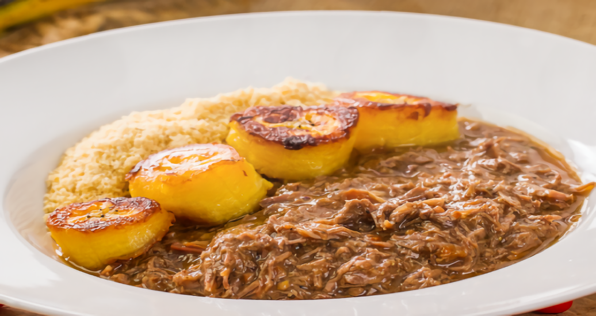
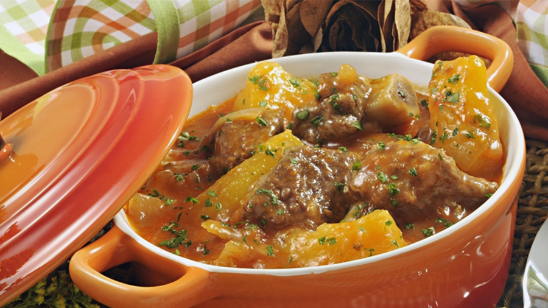
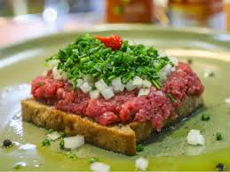
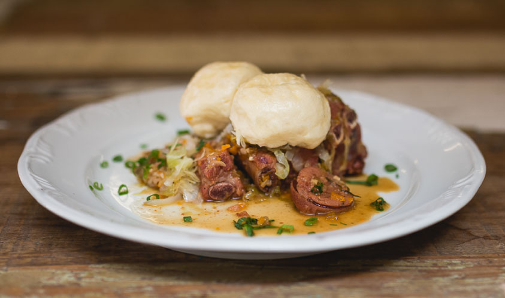
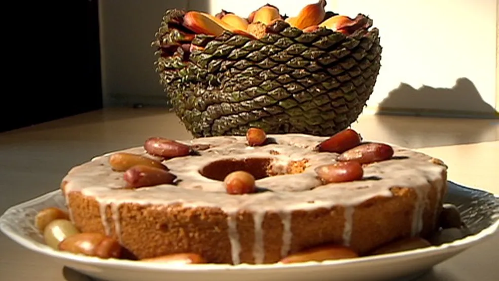
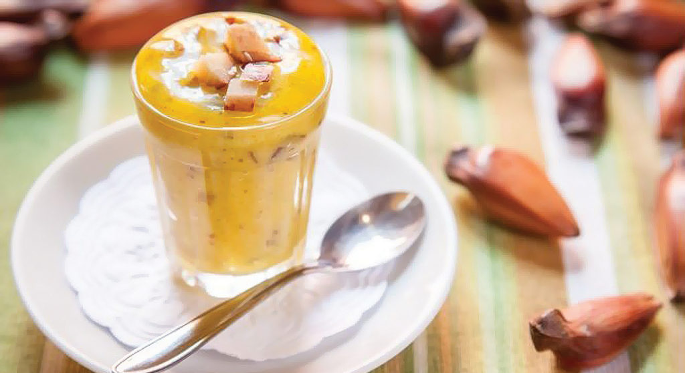

1º Festival Gastronômico Sabores do Campo na Cidade!
CONTAGEM REGRESSIVA PARA O FESTIVAL
dias
horas
min
seg
PROPOSTA
Imagine o sabor do campo chegando até você, bem no coração da cidade. O 1º Festival Gastronômico “Sabores do Campo na Cidade” vai muito além de um simples evento — é uma celebração viva da conexão entre dois mundos que se completam: o rural e o urbano. De um lado, produtores locais trazendo o melhor da terra — ingredientes frescos, sazonais, cheios de autenticidade e história. Do outro, chefs urbanos criativos e apaixonados, que valorizam a origem de cada produto e transformam esses ingredientes em verdadeiras obras-primas da culinária. E o que será servido? Pratos típicos do interior do Paraná, preparados com alma e tradição, agora apresentados com novos toques e técnicas no coração da cidade. É a comida da roça ganhando novos espaços, encantando os paladares e despertando memórias afetivas em cada garfada. “Festejando a conexão entre campo e cidade” é mais do que um lema — é o propósito que guia cada detalhe deste festival. Um momento para vivenciar, provar, aprender e se encantar com os sabores, saberes e histórias que unem essas duas realidades. Quando o campo e a cidade se encontram em harmonia, nasce algo especial. Venha celebrar com a gente — porque quem ganha com essa união é todo mundo.
Sabores com História
BARREADO
Um prato de carne cozida lentamente, geralmente com costelas de boi, acompanhado de pão, arroz e farinha de mandioca.
Conheça a ReceitaVaca Atolada
Um prato com carne bovina, mandioca, linguiça e outros ingredientes, cozido em fogo baixo.
Conheça a ReceitaCARNE DE ONÇA
é um prato típico de Curitiba, feito com carne bovina crua bem temperada, servida sobre pão e finalizada com cebolinha.
Conheça a ReceitaPÃO NO BAFO
Pão cozido no vapor, frequentemente com carne, um clássico dos Campos Gerais.
Conheça a ReceitaBOLO DE PINHÃO
Bolo de Pinhão: Bolo feito com pinhões cozidos e moídos, farinha de trigo, açúcar, ovos e manteiga.
Conheça a ReceitaDOCE DE PINHÃO
Doce tradicional feito com pinhões, açúcar e água, muito apreciado na região.
Conheça a ReceitaCHEFS CONVIDADOS
Quatro chefs convidados para o festival celebram a união do campo e da cidade na gastronomia: Ana Terra resgata tradições locais, Bento inova com ingredientes rústicos, Cora foca na sustentabilidade, e Dante explora a fusão de sabores regionais e internacionais. Cada um trará experiências únicas ao evento.
SOBRE NÓS
O "Festival Gastronômico: Sabores do Campo à Cidade" celebra a união entre a produção local e a culinária urbana, valorizando ingredientes regionais e conectando produtores com consumidores. Sua missão é promover a cultura alimentar local, destacando a autenticidade e a diversidade da gastronomia da região.
LOCAL DO EVENTO
Rod. Dep. João Leopoldo Jacomel, 10454 - Vila Amélia, Pinhais - PR, CEP: 83320-005.
REGRAS
- Apresentação do ingresso obrigatória.
- Documento de identificação com foto pode ser solicitado.
- Menores de idade devem estar acompanhados dos pais ou responsáveis.
- Conduta respeitosa é esperada de todos.
- Seguir as orientações da equipe de segurança.
- Câmeras e celulares para uso pessoal são permitidos.
- Bolsas e mochilas podem ser inspecionadas.
- Comportamento agressivo ou desrespeitoso é proibido.
- Drogas ilícitas e armas são proibidas.
- A participação no festival implica na aceitação destas regras.
ENTRE EM CONTATO CONOSCO!
E-mail: FestivalGastronomicoCC@gmail.com
Telefone: (42) 9 885672-0908
Redes Sociais: @FestivalGastronomicoCC